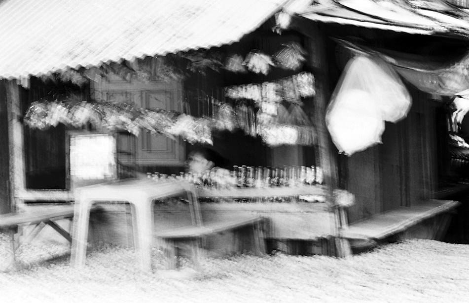
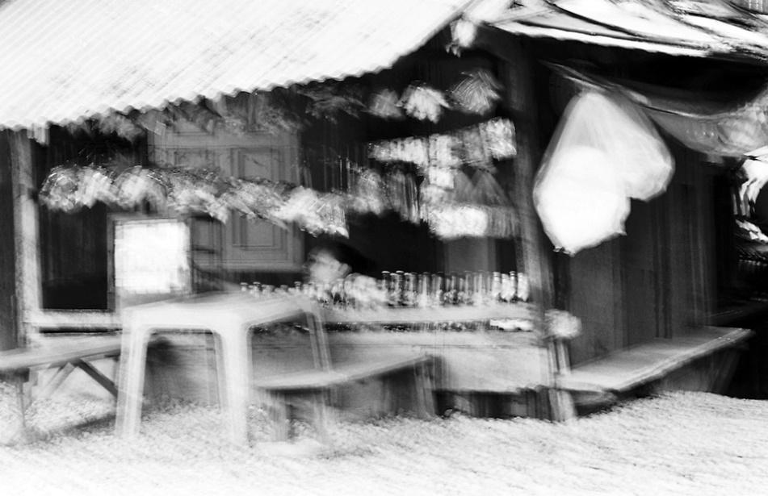
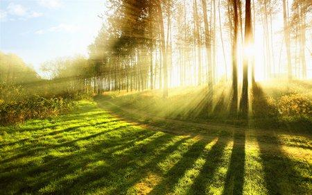
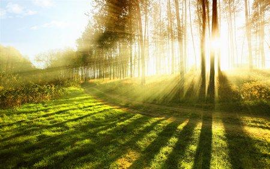
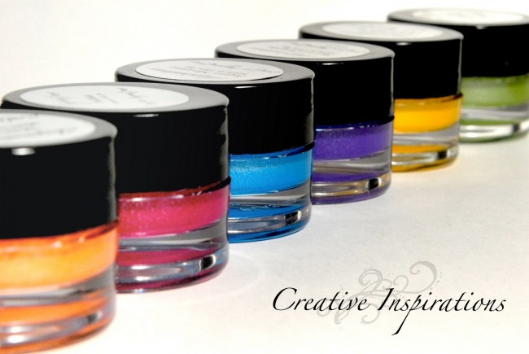
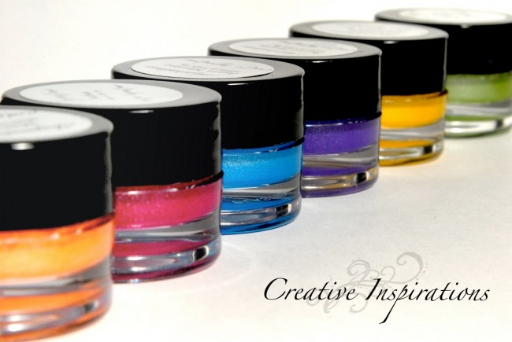

Sau khi đọc qua các nguyên tắc về bố cục, các thông số cơ bản về nhiếp ảnh, thì việc nắm bắt các kỹ thuật chụp ảnh cơ bản bạn sẽ dễ dàng để có một bức ảnh để đời:
Nguyên nhân chính làm cho ảnh thiếu độ sắc nét
Trước khi đề cập đến vấn đề làm thế nào để chụp được ảnh sắc nét, chúng ta sẽ tìm hiểu về các nguyên nhân chính làm cho ảnh thiếu độ sắc nét.
1. Lấy nét chưa đúng: Một trong những nguyên nhân thường gặp nhật là ảnh không được lấy nét đúng. Điều này có thể xảy ra khi lấy nét sai đối tượng trong cảnh chụp, khoảng cách chụp quá gần làm cho máy ảnh không lấy nét được, chọn khẩu độ làm cho độ sâu trường ảnh quá hẹp hoặc thao tác chụp quá nhanh khi máy ảnh chưa kịp lấy nét.
2. Chủ thể chuyển động: Một kiểu nhòe khác của ảnh chụp là kết quả của việc chụp một chủ thể đang chuyển động, điều này thường xảy ra do tốc độ chụp quá chậm.
3. Máy ảnh bị rung: Ảnh sẽ bị nhòe tương tự như khi chụp chủ thể chuyển động. Việc này thường liên quan đến tốc độ chụp và/hoặc sự cố định, vững chắc của máy ảnh.

4. Nhiễu hạt: Tấm ảnh bị nhiễu hạt (hay còn gọi là Noise) sẽ không được rõ nét vì đã các nhiễu hạt này sẽ "đè" lên một số điểm ảnh và làm mất đi chi tiết của điểm ảnh đó.
Trước khi đề cập đến vấn đề làm thế nào để chụp được ảnh sắc nét, chúng ta sẽ tìm hiểu về các nguyên nhân chính làm cho ảnh thiếu độ sắc nét.
1. Lấy nét chưa đúng: Một trong những nguyên nhân thường gặp nhật là ảnh không được lấy nét đúng. Điều này có thể xảy ra khi lấy nét sai đối tượng trong cảnh chụp, khoảng cách chụp quá gần làm cho máy ảnh không lấy nét được, chọn khẩu độ làm cho độ sâu trường ảnh quá hẹp hoặc thao tác chụp quá nhanh khi máy ảnh chưa kịp lấy nét.
2. Chủ thể chuyển động: Một kiểu nhòe khác của ảnh chụp là kết quả của việc chụp một chủ thể đang chuyển động, điều này thường xảy ra do tốc độ chụp quá chậm.
3. Máy ảnh bị rung: Ảnh sẽ bị nhòe tương tự như khi chụp chủ thể chuyển động. Việc này thường liên quan đến tốc độ chụp và/hoặc sự cố định, vững chắc của máy ảnh.

4. Nhiễu hạt: Tấm ảnh bị nhiễu hạt (hay còn gọi là Noise) sẽ không được rõ nét vì đã các nhiễu hạt này sẽ "đè" lên một số điểm ảnh và làm mất đi chi tiết của điểm ảnh đó.
1. Giữ vững máy ảnh:
Đa số ảnh chụp bị mờ là do máy ảnh bị rung do cầm máy không vững hoặc của việc nhấn nút chụp và tác động của màn trập. Trong khi cách tốt nhất để giải quyến vấn đề rung máy là sử dụng giá đỡ (Tripod) thì đa số trường hợp đều cầm máy bằng tay khi chụp. Hãy sử dụng cả hai tay để cầm máy ảnh, giữ cho máy ảnh sát với cơ thể của bạn, có thể tựa vào mộ bức tường hoặc thân cây...
2. Giá đỡ ba chân hoặc giá đỡ 1 chân (Tripod hoặc Monopod)
Cách tốt nhất để giảm hoặc thậm chí là loại bò hoàn toàn việc máy ảnh bị rung. Tuy việc này là không thực tế nhưng bạn sẽ nhận được kết quả xứng đáng.
3. Tốc độ chụp
Có lẽ một trong những điều đầu tiên cần lưu ý khi muốn chụp được ảnh rõ nét là việc lựa chọn tốc độ chụp. Rõ ràng là tốc độ chụp nhanh hơn sẽ ít bị tác động đến do máy bị rung và sẽ dễ dàng chụp "dính" được bất kỳ chủ thể chuyển động nào trong ảnh chụp. Kết quả là sẽ giảm được cả hai kiểu mờ của ảnh chụp (do chủ thể chuyển động và náy ảnh bị rung). Hãy nhớ các nguyên tắc về tốc độ chụp: Chọn tốc độ chụp với một mẫu số lớn hơn độ dài tiêu cự của ống kính.
- Nếu ống kính có độ dài tiêu cự là 50mm, đừng chụp tốc độ chậm hơn 1/80 giây.
- Nếu ống kính có độ dài tiêu cự là 85mm, chụp ở tốc độ 1/160 giây hoặc nhanh hơn.
- Nếu ống kính có độ dài tiêu cự là 200mm, chụp ở tốc độ 1/320 giây hoặc nhanh hơn.
Hãy nhớ rằng nếu chọn tốc độ chụp nhanh hơn thì cần phải điều chỉnh khẩu độ để bù lại, nhưng việc này sẽ làm cho độ sâu trường ảnh hẹp và việc lấy nét ảnh chụp sẽ khó hơn.
4. Khẩu độ
Khẩu độ tác động đến độ sâu trường ảnh (vùng rõ nét) của hình ảnh. Giảm khẩu độ (tăng mẫu số - nói đến f/20) sẽ làm tăng độ sâu trường ảnh, có nghĩa là ảnh sẽ được lấy nét ở vùng phía trước (gần) và phía sau (xa) vị trí của chủ thể. Ngược lại (ví dụ f/4) vùng rõ nét sẽ hẹp và bạn phải chú ý hơn trong việc lấy nét đúng đối tượng.
5. ISO
ISO là yếu tố thứ ba trong tam giác phơi sáng, ảnh hưởng trực tiếp của nó chính là làm ảnh bị nhiễu hạt. Chọn mức ISO lớn sẽ cho phép chụp với tốc độ nhanh hơn và khẩu độ nhỏ hơn (cần thiết cho việc chụp ảnh rõ nét). Do mức ISO cao sẽ làm cho ảnh bị nhiễu hạt và mức độ nhiễu hạt ít hay nhiều sẽ tùy thuộc vào từng máy ảnh khác nhau, cho nên hãy cố gắng sử dụng mức ISO càng thấp càng tốt.
6. Ổn định hình ảnh
Một số máy ảnh và ống kính có chức năng ổn định hình ảnh hay còn gọi là Chống rung quang học bằng các công nghệ khác nhau (Canon gọi là IS, Nikon gọi là VR, Sigma gọi là OS, Tamron gọi là VC,….), nó không loại bỏ hoàn toàn nhưng cũng làm giảm bớt ảnh hưởng của sự rung máy. Hãy ghi nhớ là chức năng này chỉ giúp giảm ảnh hưởng do rung máy để giúp chụp với tốc độ thấp chứ không phải dùng để chụp các đối tưởng chuyển động. Có 2 loại chống rung là chống rung trên ống kính và chống rung ngay trong thân máy ảnh.
7. Lấy nét
Có lẽ kỹ thuật lấy nét là yếu tố chính ảnh hưởng đến độ rõ nét của ảnh chụp. hầu hết chúng ta thường sử dụng chế độ lấy nét tự động (Auto Focus) của máy ảnh mà không nghĩ rằng máy ảnh cũng có thể lấy nét không chính xác. Hãy luôn kiểm tra trên màn hình để chắc ảnh được lấy nét trước khi nhấn nút chụp. Việc này rất cần thiết khi chụp với khẩu độ lớn (chiều sâu trường ảnh hẹp), chỉ cần chủ thể hơi bị lệch khỏi vùng rõ nét là sẽ bị mờ. Thông thường khi chụp lấy nét bằng LiveView thì lấy nét sẽ chính xác hơn khi dùng kính ngắm quang học.
8. Ống kính tốt
Điều này rất cần thiết đối với các máy ảnh chuyên nghiệp (DSLR). Nếu bạn có khả năng trang bị ống kính có chất lượng tốt thì cũng sẽ có được những hình ảnh sắc nét hơn và cần lưu ý là không phải ống kính nào cũng có chất lượng như nhau. Thông thường thì ống Fix (Ống 1 tiêu cự) sẽ cho ra ảnh tốt hơn các loại ống kính Zoom hay Tele hay những ống đa dụng trong cùng phân khúc giá cả.
9. Hãy kiểm tra mắt của bạn
Hãy kiểm tra để chắc là mắt của bạn không có vấn đề gì, nhất là khi sử dụng kính. Nếu máy ảnh của bạn có nút chỉnh "diopter" (nút chỉnh độ cận thị), nút này có dạng bánh xe xoay nằm bên cạnh ống ngắm (View finder) thì hãy sử dụng nó đề điều chỉnh cho phù hợp với mắt của bạn.
10. Làm sạch máy ảnh
Những vết dơ, bụi, mốc... trên ống kính hoặc bộ cảm biến ảnh sẽ làm ảnh hưởng đến chất lượng ảnh chụp. Tương tự như vậy, nếu bộ cảm biến ảnh của máy ảnh DSLR (hay Mirrorless) nếu bị dính bụi sẽ tạo ra các đốm lấm tấm trên ảnh sau khi chụp.
11. Chọn điểm sắc nét của ống kính
Nếu ống kính của bạn là loại Zoom, bạn sẽ không thấy tùy chọn này. Nếu bạn có ống fix, đặc biệt là các thế hệ cũ, bạn sẽ thấy một hàng số giống như hàng số đối xứng, có trung tâm là kí tự | (nằm ngay phía dưới hàng số màu da cam) trong hình dưới:
Thứ tự các dòng số trong hình trên, từ trên xuống:
- Khoảng lấy nét (hàng trên màu trắng: đơn vị foot, hàng dưới màu da cam: đơn vị mét).
- Khoảng siêu lấy nét.
- Vòng xoay khẩu độ.
Thông số khoảng cách siêu lấy nét sẽ cho bạn biết phần nào trong bức ảnh của bạn sẽ nằm trong vùng nét ở các mức khẩu độ khác nhau. Trong bức ảnh trên, khẩu độ được chọn là f16, khoảng lấy nét là 5 m (15 ft).
Đa số ảnh chụp bị mờ là do máy ảnh bị rung do cầm máy không vững hoặc của việc nhấn nút chụp và tác động của màn trập. Trong khi cách tốt nhất để giải quyến vấn đề rung máy là sử dụng giá đỡ (Tripod) thì đa số trường hợp đều cầm máy bằng tay khi chụp. Hãy sử dụng cả hai tay để cầm máy ảnh, giữ cho máy ảnh sát với cơ thể của bạn, có thể tựa vào mộ bức tường hoặc thân cây...
2. Giá đỡ ba chân hoặc giá đỡ 1 chân (Tripod hoặc Monopod)
Cách tốt nhất để giảm hoặc thậm chí là loại bò hoàn toàn việc máy ảnh bị rung. Tuy việc này là không thực tế nhưng bạn sẽ nhận được kết quả xứng đáng.
3. Tốc độ chụp
Có lẽ một trong những điều đầu tiên cần lưu ý khi muốn chụp được ảnh rõ nét là việc lựa chọn tốc độ chụp. Rõ ràng là tốc độ chụp nhanh hơn sẽ ít bị tác động đến do máy bị rung và sẽ dễ dàng chụp "dính" được bất kỳ chủ thể chuyển động nào trong ảnh chụp. Kết quả là sẽ giảm được cả hai kiểu mờ của ảnh chụp (do chủ thể chuyển động và náy ảnh bị rung). Hãy nhớ các nguyên tắc về tốc độ chụp: Chọn tốc độ chụp với một mẫu số lớn hơn độ dài tiêu cự của ống kính.
- Nếu ống kính có độ dài tiêu cự là 50mm, đừng chụp tốc độ chậm hơn 1/80 giây.
- Nếu ống kính có độ dài tiêu cự là 85mm, chụp ở tốc độ 1/160 giây hoặc nhanh hơn.
- Nếu ống kính có độ dài tiêu cự là 200mm, chụp ở tốc độ 1/320 giây hoặc nhanh hơn.
Hãy nhớ rằng nếu chọn tốc độ chụp nhanh hơn thì cần phải điều chỉnh khẩu độ để bù lại, nhưng việc này sẽ làm cho độ sâu trường ảnh hẹp và việc lấy nét ảnh chụp sẽ khó hơn.
4. Khẩu độ
Khẩu độ tác động đến độ sâu trường ảnh (vùng rõ nét) của hình ảnh. Giảm khẩu độ (tăng mẫu số - nói đến f/20) sẽ làm tăng độ sâu trường ảnh, có nghĩa là ảnh sẽ được lấy nét ở vùng phía trước (gần) và phía sau (xa) vị trí của chủ thể. Ngược lại (ví dụ f/4) vùng rõ nét sẽ hẹp và bạn phải chú ý hơn trong việc lấy nét đúng đối tượng.
5. ISO
ISO là yếu tố thứ ba trong tam giác phơi sáng, ảnh hưởng trực tiếp của nó chính là làm ảnh bị nhiễu hạt. Chọn mức ISO lớn sẽ cho phép chụp với tốc độ nhanh hơn và khẩu độ nhỏ hơn (cần thiết cho việc chụp ảnh rõ nét). Do mức ISO cao sẽ làm cho ảnh bị nhiễu hạt và mức độ nhiễu hạt ít hay nhiều sẽ tùy thuộc vào từng máy ảnh khác nhau, cho nên hãy cố gắng sử dụng mức ISO càng thấp càng tốt.
6. Ổn định hình ảnh
Một số máy ảnh và ống kính có chức năng ổn định hình ảnh hay còn gọi là Chống rung quang học bằng các công nghệ khác nhau (Canon gọi là IS, Nikon gọi là VR, Sigma gọi là OS, Tamron gọi là VC,….), nó không loại bỏ hoàn toàn nhưng cũng làm giảm bớt ảnh hưởng của sự rung máy. Hãy ghi nhớ là chức năng này chỉ giúp giảm ảnh hưởng do rung máy để giúp chụp với tốc độ thấp chứ không phải dùng để chụp các đối tưởng chuyển động. Có 2 loại chống rung là chống rung trên ống kính và chống rung ngay trong thân máy ảnh.
7. Lấy nét
Có lẽ kỹ thuật lấy nét là yếu tố chính ảnh hưởng đến độ rõ nét của ảnh chụp. hầu hết chúng ta thường sử dụng chế độ lấy nét tự động (Auto Focus) của máy ảnh mà không nghĩ rằng máy ảnh cũng có thể lấy nét không chính xác. Hãy luôn kiểm tra trên màn hình để chắc ảnh được lấy nét trước khi nhấn nút chụp. Việc này rất cần thiết khi chụp với khẩu độ lớn (chiều sâu trường ảnh hẹp), chỉ cần chủ thể hơi bị lệch khỏi vùng rõ nét là sẽ bị mờ. Thông thường khi chụp lấy nét bằng LiveView thì lấy nét sẽ chính xác hơn khi dùng kính ngắm quang học.
8. Ống kính tốt
Điều này rất cần thiết đối với các máy ảnh chuyên nghiệp (DSLR). Nếu bạn có khả năng trang bị ống kính có chất lượng tốt thì cũng sẽ có được những hình ảnh sắc nét hơn và cần lưu ý là không phải ống kính nào cũng có chất lượng như nhau. Thông thường thì ống Fix (Ống 1 tiêu cự) sẽ cho ra ảnh tốt hơn các loại ống kính Zoom hay Tele hay những ống đa dụng trong cùng phân khúc giá cả.
9. Hãy kiểm tra mắt của bạn
Hãy kiểm tra để chắc là mắt của bạn không có vấn đề gì, nhất là khi sử dụng kính. Nếu máy ảnh của bạn có nút chỉnh "diopter" (nút chỉnh độ cận thị), nút này có dạng bánh xe xoay nằm bên cạnh ống ngắm (View finder) thì hãy sử dụng nó đề điều chỉnh cho phù hợp với mắt của bạn.
10. Làm sạch máy ảnh
Những vết dơ, bụi, mốc... trên ống kính hoặc bộ cảm biến ảnh sẽ làm ảnh hưởng đến chất lượng ảnh chụp. Tương tự như vậy, nếu bộ cảm biến ảnh của máy ảnh DSLR (hay Mirrorless) nếu bị dính bụi sẽ tạo ra các đốm lấm tấm trên ảnh sau khi chụp.
11. Chọn điểm sắc nét của ống kính
Nếu ống kính của bạn là loại Zoom, bạn sẽ không thấy tùy chọn này. Nếu bạn có ống fix, đặc biệt là các thế hệ cũ, bạn sẽ thấy một hàng số giống như hàng số đối xứng, có trung tâm là kí tự | (nằm ngay phía dưới hàng số màu da cam) trong hình dưới:
Thứ tự các dòng số trong hình trên, từ trên xuống:
- Khoảng lấy nét (hàng trên màu trắng: đơn vị foot, hàng dưới màu da cam: đơn vị mét).
- Khoảng siêu lấy nét.
- Vòng xoay khẩu độ.
Thông số khoảng cách siêu lấy nét sẽ cho bạn biết phần nào trong bức ảnh của bạn sẽ nằm trong vùng nét ở các mức khẩu độ khác nhau. Trong bức ảnh trên, khẩu độ được chọn là f16, khoảng lấy nét là 5 m (15 ft).

Để chụp được những bức ảnh như trên, bạn chỉ cần thực hiện những bước sau:
1. Gắn máy ảnh trên chân máy (tripod).
2. Chỉnh ISO từ 100 đến 200. Một số dòng máy hỗ trợ ISO 50 thì càng tốt.
3. Vặn chế độ chụp về Tv/S hoặc M (M thì chủ động hơn, Tv/S thì chỉ chọn được thời gian chụp, khẩu độ không tùy chỉnh được).
4. Chụp bằng dây bấm mềm hoặc đặt máy ở chế độ chụp hẹn giờ (trong khoảng 2s thôi). Như thế đảm bảo máy không bị rung do thao tác của tay.
5. Bật LiveView lên, thiết lập tốc độ và khẩu độ, ví dụ tốc độ chụp = 25 giây, khẩu độ = f11 (tùy ánh sáng thế nào mà việc thiết lập các thông số Tốc độ và khẩu độ tương ứng với nhau)… Khẩu độ có thể khép từ F11 đến 22 để làm tia sáng tỏa ra từ những điểm ánh sáng cố định như đèn đường…
* Lưu ý khi phơi sáng: Trên dây đeo máy ảnh Canon có 1 cái nút nhỏ như hình dưới mà ít ai chú ý và biết tác dụng của nó (Trên dây đeo máy Nikon thì không thấy có cái này):
Cái nút này rất là lợi hại khi phơi sáng, tác dụng của nó là che kính ngắm để ánh sáng không mong muốn lọt vào trong quá trình đang chụp phơi sáng (Ví dụ đang phơi có cái xe chạy sau lưng chiếu đèn vào kính ngắm, ảnh chụp xong xem lại thấy sáng trắng, hoặc bị flare tùm lum). Chỉ việc tháo Eye-cup ra và cắm nó vào như hình dưới:
6. Lấy nét: Bằng cách chuyển ống kính về chế độ lấy nét bằng tay MF, xoay vòng lấy nét và nhìn vào màn hình đến khi nào cảm thấy toàn ảnh nét nhất có thể. Thông thường ở khẩu độ F11 đến F16 thì ảnh gần như nét toàn bộ, chỉ những vật thể quá gần ống kính thì mới bị mờ.
7. Bấm nút chụp và nhả. Máy sẽ đợi 2s giây rồi bắt đầu chụp phơi sáng.
8. Đợi máy phơi xong rồi xem lại ảnh.
Nếu cảm thấy ảnh sáng quá hoặc tối quá thì tùy trường hợp và sở thích có thể thiết lập lại Tốc độ và Khẩu độ cho hợp lý.
Và cuối cùng, bạn muốn chụp ảnh đẹp thì phải chụp nhiều sẽ có kinh nghiệm để thiết lập các thông số, chụp khoảng vài chục cái chắc chắn sẽ được chục cái đẹp!
Hình trên là cách chụp lia máy quét theo cùng hướng và vận tốc với chủ thể đang chuyển động. Khi đó chủ thể sẽ bị bắt dính còn background thì bị mờ đi thành các vệt sáng đẹp mắt. Điểm mấu chốt ở đây là lia máy cùng tốc độ với chủ thể, để vị trí tương đối giữa máy ảnh và chủ thể là cố định và giữa máy ảnh và background là chuyển động, tạo thành các vệt sáng mờ. Phải tập luyện nhiều mới quen tay.
• Tốc độ chụp (shutter speed) là yếu tố quan trọng nhất trong kỹ thuật Panning. Thiết lập tốc độ phù hợp với từng đối tượng di chuyển như sau:
– Ô tô: 1/30 – 1/40s
– Xe máy: 1/20 – 1/30s
– Xe đạp: 1/15s – 1/20s
– Đi bộ: 1/5s – 1/15s
• Cài đặt máy:
– Chụp ở chế độ Manual, bật lấy nét liên tục (continuous focus), chuyển sang bursting mode high (chụp liên tục tốc độ cao).
– Cài đặt tốc độ chụp tương ứng với chủ thể như trên.
– Khẩu nên để ở f5.6 – f8 để ảnh nét đều nếu chụp buổi tối. Chụp ban này tốc chậm sẽ dư sáng nên khẩu phải khép tầm f16. Điều chỉnh ánh sáng của ảnh bằng tăng giảm khẩu.
– ISO điều chỉnh theo tốc và khẩu để đảm bảo Ev mong muốn: ban ngày để ISO thấp vì tốc chậm, ISO có thể tăng cao nếu chụp đêm mà ko sợ noise vì background bị mờ rồi.
• Cách chụp: đoán hướng chuyển động của chủ thể, khi bắt đầu vào khuôn hình thì bấm cò để focus và giữ để chụp liên tục nhiều shots, đồng thời lia máy theo cùng tốc độ với chủ thể.
Chụp ảnh với nguồn sáng ngược có thể dễ dàng tạo nên những "thảm họa", đặc biệt là với những người dùng không chuyên. Tuy nhiên, với một vài lưu ý dưới đây, ngay cả những người dùng máy ảnh du lịch với một chút để ý, cũng có thể tạo nên những "tác phẩm nghệ thuật", hoặc ít nhất là tạo nên những bức hình "coi được".
Dưới đây là những kỹ năng khi chụp ngược sáng.
1. Về thời gian chụp
Thời điểm lý tưởng để chụp những bức ảnh ngược sáng là buổi sáng sớm khi mặt trời mới mọc hoặc buổi chiều muộn trước hoàng hôn – lúc trời vẫn sáng nhưng không quá gắt. Thông thường, vào mùa hè, bạn nên bắt đầu chụp ảnh trước 7h sáng và buổi chiều từ 4h30 – 6h30. Mùa đông thì thời gian này có thể thay đổi một chút, tuy nhiên "thời gian vàng" cho mọi thể loại ảnh liên quan tới ánh sáng mặt trời, luôn là lúc sáng sớm và lúc hoàng hôn.

2. Về chế độ đo sáng
Trong trường hợp muốn chụp ảnh ngược sáng, bạn nên lựa chọn chế độ Spot Metering (đo sáng điểm). Bằng cách này, máy ảnh sẽ đo ánh sáng trên chủ thể chính mà bạn định chụp và không bị “nhiễu” vì ánh sáng của cảnh vật xung quanh. Cũng nên điều chỉnh mức phơi sáng xuống thấp khoảng từ 2/3 đến 1 Ev, vì nói chung, chủ thể tối hơn nên ảnh sẽ dư sáng và nhiều noise nếu bạn đo sáng vào chủ thể.
* Lưu ý:Khi bạn đo sáng vào vị trí tối, chủ thể sẽ sáng hơn, và nguồn sáng sẽ bị cháy (nghĩa là sáng trắng, mất chi tiết), ngược lại, nếu đo sáng vào vị trí sáng thì chủ thể sẽ tối. Việc này tùy vào mục đích chụp mà bạn đo sáng vào đâu. Thông thường nếu muốn hài hòa ánh sáng thì tốt nhất nên tìm vị trí đo sáng hài hòa giữa cả chủ thể và background.
3. Về nguồn sáng - Hướng và cường độ
Thông thường nếu nguồn sáng ở phía sau quá gắt, mặt của chủ thể thường bị tối hay bức ảnh bị sáng quá. Điều này là tốt nếu bạn muốn chụp những bức ảnh phong cách silhouette. Tuy nhiên, thông thường, nếu muốn mặt của chủ thể sáng hơn, hãy để chủ thể đứng sau một cái cây và phía sau cái cây là ánh sáng mặt trời. Hoặc đơn giản hơn, bạn có thể sử dụng một chiếc gương hay thiết bị hắt sáng. Trong trường hợp khó khăn, bạn có thể tận dụng đèn flash như một công cụ bù sáng khá hiệu quả (nhưng không hoàn hảo như các dụng cụ khác).
4. Về thông số cài đặt của máy ảnh
Để tạo nên bức ảnh ưng ý, bạn cần phải cài đặt máy ảnh. Việc cài đặt này tùy thuộc vào bạn muốn bức ảnh của mình như thế nào. Thông thường, nếu muốn kể một câu chuyện, bạn nên để khẩu độ nhỏ: f/22, f/16, f/11, khi đó tất cả quang cảnh xung quanh đều rõ ràng. Còn nếu muốn nhấn mạnh vào nhân vật chính, hãy để khẩu độ lớn: f/1.4, f/1.6, f/1.8, f/2.0…
* Lưu ý:Trong kỹ thuật chụp ngược sáng, thông thường để chế độ Av/A (Ưu tiên khẩu độ), máy sẽ thiết lập tốc độ chụp hợp lý. Vì ngược sáng, chủ thể sẽ tối, do đó việc lấy nét tương đối khó khăn, bạn nên chuyển sang chế độ lấy nét tay MF (Manual Focus) để lấy nét cho chính xác. Còn với những tay máy đã cứng thì việc thiết lập chế độ M (Manual) chỉnh tay toàn bộ sẽ cho ra ảnh tốt hơn.
5. Làm chủ việc lóe sáng (flare)
Hiện tượng lóe sáng hay còn gọi là flare là một thuật ngữ quen thuộc khi chụp ảnh ngược sáng. Đó là những quầng sáng lấp lánh hay những vòng ánh sáng thường xuất hiện khi bạn chụp ngược sáng do ánh sáng đi xuyên qua ống kính.
Rất nhiều người thích flare trên bức ảnh vì trông chúng rất lãng mạn. Tuy nhiên, chúng làm bức ảnh khá "loang lổ" và mất độ tương phản. Nếu bạn không thích để lại những bóng lóe sáng này, bạn cũng nên để chủ thể đứng trước một cái cây hay vật thể che chắn khác để làm tản mất những vòng tròn sáng xuất hiện trong ảnh, hoặc tốt nhất là sử dụng Hood để che ống kính.
Dưới đây là những kỹ năng khi chụp ngược sáng.
1. Về thời gian chụp
Thời điểm lý tưởng để chụp những bức ảnh ngược sáng là buổi sáng sớm khi mặt trời mới mọc hoặc buổi chiều muộn trước hoàng hôn – lúc trời vẫn sáng nhưng không quá gắt. Thông thường, vào mùa hè, bạn nên bắt đầu chụp ảnh trước 7h sáng và buổi chiều từ 4h30 – 6h30. Mùa đông thì thời gian này có thể thay đổi một chút, tuy nhiên "thời gian vàng" cho mọi thể loại ảnh liên quan tới ánh sáng mặt trời, luôn là lúc sáng sớm và lúc hoàng hôn.

Những khung giờ "ma thuật" là vào lúc bình minh hay hoàng hôn, khi ánh sáng chưa quá gắt
2. Về chế độ đo sáng
Trong trường hợp muốn chụp ảnh ngược sáng, bạn nên lựa chọn chế độ Spot Metering (đo sáng điểm). Bằng cách này, máy ảnh sẽ đo ánh sáng trên chủ thể chính mà bạn định chụp và không bị “nhiễu” vì ánh sáng của cảnh vật xung quanh. Cũng nên điều chỉnh mức phơi sáng xuống thấp khoảng từ 2/3 đến 1 Ev, vì nói chung, chủ thể tối hơn nên ảnh sẽ dư sáng và nhiều noise nếu bạn đo sáng vào chủ thể.
* Lưu ý:Khi bạn đo sáng vào vị trí tối, chủ thể sẽ sáng hơn, và nguồn sáng sẽ bị cháy (nghĩa là sáng trắng, mất chi tiết), ngược lại, nếu đo sáng vào vị trí sáng thì chủ thể sẽ tối. Việc này tùy vào mục đích chụp mà bạn đo sáng vào đâu. Thông thường nếu muốn hài hòa ánh sáng thì tốt nhất nên tìm vị trí đo sáng hài hòa giữa cả chủ thể và background.
Đo sáng vào chủ thể và giảm mức Ev compensation sẽ cho một bức ảnh đủ sáng
3. Về nguồn sáng - Hướng và cường độ
Thông thường nếu nguồn sáng ở phía sau quá gắt, mặt của chủ thể thường bị tối hay bức ảnh bị sáng quá. Điều này là tốt nếu bạn muốn chụp những bức ảnh phong cách silhouette. Tuy nhiên, thông thường, nếu muốn mặt của chủ thể sáng hơn, hãy để chủ thể đứng sau một cái cây và phía sau cái cây là ánh sáng mặt trời. Hoặc đơn giản hơn, bạn có thể sử dụng một chiếc gương hay thiết bị hắt sáng. Trong trường hợp khó khăn, bạn có thể tận dụng đèn flash như một công cụ bù sáng khá hiệu quả (nhưng không hoàn hảo như các dụng cụ khác).
Ảnh chụp theo phong cách silhouette, khá đẹp nhưng việc chủ thể bị tối hoàn toàn không phải khi nào cũng tốt
Có những lớp che sáng phía sau chủ thể giúp nguồn sáng ngược không quá gắt
4. Về thông số cài đặt của máy ảnh
Để tạo nên bức ảnh ưng ý, bạn cần phải cài đặt máy ảnh. Việc cài đặt này tùy thuộc vào bạn muốn bức ảnh của mình như thế nào. Thông thường, nếu muốn kể một câu chuyện, bạn nên để khẩu độ nhỏ: f/22, f/16, f/11, khi đó tất cả quang cảnh xung quanh đều rõ ràng. Còn nếu muốn nhấn mạnh vào nhân vật chính, hãy để khẩu độ lớn: f/1.4, f/1.6, f/1.8, f/2.0…
* Lưu ý:Trong kỹ thuật chụp ngược sáng, thông thường để chế độ Av/A (Ưu tiên khẩu độ), máy sẽ thiết lập tốc độ chụp hợp lý. Vì ngược sáng, chủ thể sẽ tối, do đó việc lấy nét tương đối khó khăn, bạn nên chuyển sang chế độ lấy nét tay MF (Manual Focus) để lấy nét cho chính xác. Còn với những tay máy đã cứng thì việc thiết lập chế độ M (Manual) chỉnh tay toàn bộ sẽ cho ra ảnh tốt hơn.
Với bức ảnh này, một khẩu độ tương đối nhỏ được mở để thấy rõ được toàn bộ chủ thể (chú hươu)
5. Làm chủ việc lóe sáng (flare)
Hiện tượng lóe sáng hay còn gọi là flare là một thuật ngữ quen thuộc khi chụp ảnh ngược sáng. Đó là những quầng sáng lấp lánh hay những vòng ánh sáng thường xuất hiện khi bạn chụp ngược sáng do ánh sáng đi xuyên qua ống kính.
Ảnh chụp có lóe sáng thường nhìn "ảo diệu", nhưng mất tương phản
Rất nhiều người thích flare trên bức ảnh vì trông chúng rất lãng mạn. Tuy nhiên, chúng làm bức ảnh khá "loang lổ" và mất độ tương phản. Nếu bạn không thích để lại những bóng lóe sáng này, bạn cũng nên để chủ thể đứng trước một cái cây hay vật thể che chắn khác để làm tản mất những vòng tròn sáng xuất hiện trong ảnh, hoặc tốt nhất là sử dụng Hood để che ống kính.
Đây là một trong những thể loại nhiếp ảnh khá là khó nhằn, do việc chụp thể thao chủ yếu là bắt khoảnh khắc đẹp, mọi thiết lập đều tuân theo một chế độ gần như mặc định về ánh sáng tại thời điểm chụp. Cơ bản vì bạn chả thể nào đủ thời gian thể thiết lập thiết bị nhanh hơn những hoạt động của Vận động viên khi đang trong một trận đấu.
Ở kỹ thuật chụp này việc lấy nét rất quan trọng, bạn nên để chế độ AF (Lấy nét tự động) cho ống kính (Lưu ý là chụp thể thao thì không được bật Flash). Và chuyển sang chế độ lấy nét liên tục (Al Servo trên Canon hoặc AF-C (AF-A) trên Nikon, Sony). Việc bạn chơi môn thể thao nào, hoặc hiểu rõ về môn thể thao cần chụp là một lợi thế khi bạn chụp vì bạn sẽ đoán được sự di chuyển của VĐV thì bạn sẽ dễ dàng nắm bắt được khoảnh khắc.
Và trong chụp thể thao thì Bố cục ảnh không quan trọng lắm, nhưng nếu cố gắng thiết lập được bố cục thì ảnh sẽ tuyệt hơn rất nhiều.
Tiếp nữa, việc thiếp lập Khẩu độ nhỏ nhất để tối ưu hóa cho tốc độ chụp, ISO thì cao hết mức có thể (tầm 800 đến 3200 hoặc hơn tùy vào hỗ trợ của Máy ảnh), ảnh có thể bị nhiễu (Noise) chút cũng không sao. Tốc độ chụp thì tùy vào từng môn thể thao mà có thể thiết lập theo ý muốn người chụp. Thông thường thì từng môn tốc độ sẽ tương ứng như sau:
Bóng đá: Tốc độ thường từ 1/200s đến 1/400s.
Cầu lông: Tốc độ thường từ 1/500s đến 1/1000s.
Tennis: Tốc độ thường từ 1/400s đến 1/800s.
Bóng chuyền: Tốc độ từ 1/200s đến 1/400s.
Bóng bàn: Tốc độ từ 1/320s đến 1/500s.
Ở trên chỉ là những thiết lập tốc độ theo kinh nghiệm của mình đã từng chụp, và việc thiết lập này tương ứng với tốc độ di chuyển, vận động của VĐV của từng môn, còn tùy vào môi trường, ánh sáng, ống kính, mục đích chụp của từng người mà tốc độ có thể thay đổi theo.
Ở kỹ thuật chụp này việc lấy nét rất quan trọng, bạn nên để chế độ AF (Lấy nét tự động) cho ống kính (Lưu ý là chụp thể thao thì không được bật Flash). Và chuyển sang chế độ lấy nét liên tục (Al Servo trên Canon hoặc AF-C (AF-A) trên Nikon, Sony). Việc bạn chơi môn thể thao nào, hoặc hiểu rõ về môn thể thao cần chụp là một lợi thế khi bạn chụp vì bạn sẽ đoán được sự di chuyển của VĐV thì bạn sẽ dễ dàng nắm bắt được khoảnh khắc.
Và trong chụp thể thao thì Bố cục ảnh không quan trọng lắm, nhưng nếu cố gắng thiết lập được bố cục thì ảnh sẽ tuyệt hơn rất nhiều.
(Ảnh của AP)
Tiếp nữa, việc thiếp lập Khẩu độ nhỏ nhất để tối ưu hóa cho tốc độ chụp, ISO thì cao hết mức có thể (tầm 800 đến 3200 hoặc hơn tùy vào hỗ trợ của Máy ảnh), ảnh có thể bị nhiễu (Noise) chút cũng không sao. Tốc độ chụp thì tùy vào từng môn thể thao mà có thể thiết lập theo ý muốn người chụp. Thông thường thì từng môn tốc độ sẽ tương ứng như sau:
Bóng đá: Tốc độ thường từ 1/200s đến 1/400s.
Cầu lông: Tốc độ thường từ 1/500s đến 1/1000s.
Tennis: Tốc độ thường từ 1/400s đến 1/800s.
Bóng chuyền: Tốc độ từ 1/200s đến 1/400s.
Bóng bàn: Tốc độ từ 1/320s đến 1/500s.
Ở trên chỉ là những thiết lập tốc độ theo kinh nghiệm của mình đã từng chụp, và việc thiết lập này tương ứng với tốc độ di chuyển, vận động của VĐV của từng môn, còn tùy vào môi trường, ánh sáng, ống kính, mục đích chụp của từng người mà tốc độ có thể thay đổi theo.
Ảnh sản phẩm là khó khăn mà hầu như trong kinh doanh buôn bán ai cũng gặp phải. Lấy ảnh trên mạng thì chất lượng, phong cách không đồng nhất, đôi khi không có ảnh phù hợp. Thuê dịch vụ chụp ảnh sản phẩm có thể đảm bảo được chất lượng nhưng chi phí cao, đôi khi lại rất khó tìm được dịch vụ ưng ý.
Các hình thức chụp
Trước hết hãy xem có các kiểu chụp ảnh sản phẩm sau:
1. Chụp với phông nền: sản phẩm được chụp đặt trước một phông nền phía sau

2. Chụp bối cảnh: sản phẩm được chụp đặt trong bối cảnh sử dụng phù hợp
3. Chụp 3D: sản phẩm được tạo hình khối 3D, đôi khi được chụp ở nhiều góc độ giúp người xem nhìn được toàn bộ sản phẩm.
4. Chụp sáng tạo: người chụp tự sáng tạo ra cách chụp của riêng mình để tăng tính độc đáo
Với đa số chúng ta, hình thức “chụp với phông nền” đã có thể đáp ứng tốt nhu cầu, lại đơn giản, không yêu cầu kỹ thuật cao cũng như thiết bị quá đắt tiền.
Chuẩn bị dụng cụ
Chúng ta cần những dụng cụ sau để tác nghiệp:
1. Máy ảnh: sử dụng 1 máy ảnh chuyên dụng (DSLR) là tốt nhất. Nhưng nếu không có thì một chiếc máy ảnh du lịch (PnS) hoặc thậm chí điện thoại, máy tính bảng có camera cũng không quá tệ, nhất là khi chụp những sản phẩm nhỏ thì cũng tương đối tốt.
2. Chân máy (tripod): chân máy giúp bạn cố định máy ảnh & góc chụp. Đây là dụng cụ tối quan trọng giúp đảm bảo chất lượng ảnh cao nhất. Nếu sử dụng máy ảnh (DSLR hoặc PnS), bạn có thể mua tripod ở các cửa hàng máy ảnh. Nếu dùng điện thoại hay máy tính bảng, cửa hàng phụ kiện điện thoại là nơi bạn nên ghé tới. Một chân máy Trung Quốc có giá khá rẻ, thậm chí 200k là có một chiếc dùng được rồi.
3. Phông nền: hông nền màu trắng phù hợp với đa số sản phẩm. Việc chuẩn bị phông trắng cũng rất dễ dàng. Nếu tiết kiệm, chỉ cần 1 tờ giấy trắng, càng to càng tốt (phù hợp với không gian và sản phẩm bạn chụp). Nếu “có điều kiện” hoặc muốn chuyên nghiệp hơn, bạn có thể tìm mua hộp chụp sản phẩm. Hoặc nếu thích bạn có thể tự tay làm một hộp chụp sản phẩm cho riêng mình.
4. Đèn chiếu sáng: với nhu cầu đơn giản, khuyên bạn sử dụng bóng đèn ánh sáng trắng, dễ dàng mua ở các cửa hàng điện dân dụng. Có thể lắp thêm chụp đèn để tăng cường độ sáng và dán giấy hoặc bọc vải để làm ánh sáng mềm hơn. Bạn có thể chỉ sử dụng 1 đèn, nhưng để ảnh được đẹp & chuyên nghiệp, sử dụng 2 đến 3 chiếc thì càng tốt.
Chuẩn bị xong, “studio” của bạn trông sẽ đại khái thế này
Bây giờ sau khi đã đầy đủ dụng cụ, bạn cần cài đặt các thông số như sau:
1. Máy ảnh
a. Sử dụng máy ảnh (DSLR hoặc PnS), bạn chú ý điều chỉnh các thông số sau
- ISO: để ảnh được đẹp nhất, đặt cố định ISO 100.
- Khẩu độ (f): nên đặt F14 trở lên để toàn bộ sản phẩm được nét nhất.
- Thiết lập chế độ chụp là Ưu tiên khẩu độ Av/A để máy tự động chỉnh tốc độ.
- Cân bằng trắng (White-balance): đặt Tự động (Auto)
b. Nếu sử dụng máy ảnh điện thoại hoặc máy tính bảng, nếu có thể điều chỉnh các thông số trên thì bạn chỉnh đúng như vậy, còn không thì để Auto.
c. Đặt máy ảnh cao hơn sản phẩm 1 góc phù hợp và hướng trực diện vào phông nền
2. Phông nền
a. Nếu sử dụng giấy, bạn kẹp miếng giấy tạo thành 1 góc cong như hình dưới.
b. Kiểm tra kỹ phông nền, làm sạch các vết bẩn, là phẳng các vết nhàu
3. Đèn chiếu
a. Bạn đặt đèn cao hơn sản phẩm và chĩa 1 góc chéo xuống sản phẩm.
b. Hướng chiếu sáng thẳng vào sản phẩm.
c. Đèn đặt cùng phía với camera so với sản phẩm.
d. Nếu có 2 đèn, đặt chúng ở vị trí đối xứng nhau.
e. Nếu có 3 đèn, đặt đèn thứ 3 chiếu thẳng góc từ trên xuống sản phẩm.
Giống như hình dưới
4. Thực hiện
Giờ là bước quan trọng và thú vị nhất.
Đặt sản phẩm vào chính giữa phông nền, trực diện với máy ảnh
Lấy nét ở máy ảnh (nên bật LiveView để lấy nét cho chính xác). Chụp thử vài tấm để kiểm tra kết quả.
Điều chỉnh lại các thông số nếu ảnh chưa ưng ý.
Tăng khẩu độ (giảm chỉ số f) nếu ảnh thiếu sáng.
Thử 1 vài cách đặt sản phẩm để có góc chụp ưng ý nhất.
Giảm bù trừ sáng (EV) để tăng độ tương phản nếu chụp trên nền đen.
Tăng cường độ sáng nếu sản phẩm đổ bóng quá nhiều.
5. Mẹo & những lưu ý:
Để những bức ảnh chụp sản phẩm được chuyên nghiệp hơn, các bạn có thể áp dụng một số mẹo hữu ích
Sử dụng tấm kính đặt dưới sản phẩm nếu muốn tạo hình phản chiếu và làm nổi hình khối sản phẩm
Nền đen phù hợp với các sản phẩm màu trắng
Nền cùng màu với sản phẩm tạo ra phong cách khá thú vị. Thử mà xem
Khẩu độ (f) không nên đặt chỉ số nhỏ hơn 8, sẽ làm cho 1 số phần của sản phẩm bị mờ.
Không nên sử dụng các loại đèn có ánh sáng vàng hoặc các màu khác, sẽ làm mất màu thật của sản phẩm
Nếu sản phẩm có nhiều phiên bản màu, kết hợp chụp chung 1 tấm sẽ rất nổi bật và bắt mắt
Khi đã thành thạo hơn, hãy thử một vài góc chụp hoặc cách bài trí khác biệt
Thay đổi phông nền là cách sáng tạo dễ nhất. Hãy thử các màu mới, sử dụng ảnh làm nền hoặc thử các chất liệu mới như mặt bàn chẳng hạn

Các hình thức chụp
Trước hết hãy xem có các kiểu chụp ảnh sản phẩm sau:
1. Chụp với phông nền: sản phẩm được chụp đặt trước một phông nền phía sau
2. Chụp bối cảnh: sản phẩm được chụp đặt trong bối cảnh sử dụng phù hợp
3. Chụp 3D: sản phẩm được tạo hình khối 3D, đôi khi được chụp ở nhiều góc độ giúp người xem nhìn được toàn bộ sản phẩm.
4. Chụp sáng tạo: người chụp tự sáng tạo ra cách chụp của riêng mình để tăng tính độc đáo
Với đa số chúng ta, hình thức “chụp với phông nền” đã có thể đáp ứng tốt nhu cầu, lại đơn giản, không yêu cầu kỹ thuật cao cũng như thiết bị quá đắt tiền.
Chuẩn bị dụng cụ
Chúng ta cần những dụng cụ sau để tác nghiệp:
1. Máy ảnh: sử dụng 1 máy ảnh chuyên dụng (DSLR) là tốt nhất. Nhưng nếu không có thì một chiếc máy ảnh du lịch (PnS) hoặc thậm chí điện thoại, máy tính bảng có camera cũng không quá tệ, nhất là khi chụp những sản phẩm nhỏ thì cũng tương đối tốt.
2. Chân máy (tripod): chân máy giúp bạn cố định máy ảnh & góc chụp. Đây là dụng cụ tối quan trọng giúp đảm bảo chất lượng ảnh cao nhất. Nếu sử dụng máy ảnh (DSLR hoặc PnS), bạn có thể mua tripod ở các cửa hàng máy ảnh. Nếu dùng điện thoại hay máy tính bảng, cửa hàng phụ kiện điện thoại là nơi bạn nên ghé tới. Một chân máy Trung Quốc có giá khá rẻ, thậm chí 200k là có một chiếc dùng được rồi.
3. Phông nền: hông nền màu trắng phù hợp với đa số sản phẩm. Việc chuẩn bị phông trắng cũng rất dễ dàng. Nếu tiết kiệm, chỉ cần 1 tờ giấy trắng, càng to càng tốt (phù hợp với không gian và sản phẩm bạn chụp). Nếu “có điều kiện” hoặc muốn chuyên nghiệp hơn, bạn có thể tìm mua hộp chụp sản phẩm. Hoặc nếu thích bạn có thể tự tay làm một hộp chụp sản phẩm cho riêng mình.
4. Đèn chiếu sáng: với nhu cầu đơn giản, khuyên bạn sử dụng bóng đèn ánh sáng trắng, dễ dàng mua ở các cửa hàng điện dân dụng. Có thể lắp thêm chụp đèn để tăng cường độ sáng và dán giấy hoặc bọc vải để làm ánh sáng mềm hơn. Bạn có thể chỉ sử dụng 1 đèn, nhưng để ảnh được đẹp & chuyên nghiệp, sử dụng 2 đến 3 chiếc thì càng tốt.
Chuẩn bị xong, “studio” của bạn trông sẽ đại khái thế này
Bây giờ sau khi đã đầy đủ dụng cụ, bạn cần cài đặt các thông số như sau:
1. Máy ảnh
a. Sử dụng máy ảnh (DSLR hoặc PnS), bạn chú ý điều chỉnh các thông số sau
- ISO: để ảnh được đẹp nhất, đặt cố định ISO 100.
- Khẩu độ (f): nên đặt F14 trở lên để toàn bộ sản phẩm được nét nhất.
- Thiết lập chế độ chụp là Ưu tiên khẩu độ Av/A để máy tự động chỉnh tốc độ.
- Cân bằng trắng (White-balance): đặt Tự động (Auto)
b. Nếu sử dụng máy ảnh điện thoại hoặc máy tính bảng, nếu có thể điều chỉnh các thông số trên thì bạn chỉnh đúng như vậy, còn không thì để Auto.
c. Đặt máy ảnh cao hơn sản phẩm 1 góc phù hợp và hướng trực diện vào phông nền
2. Phông nền
a. Nếu sử dụng giấy, bạn kẹp miếng giấy tạo thành 1 góc cong như hình dưới.
b. Kiểm tra kỹ phông nền, làm sạch các vết bẩn, là phẳng các vết nhàu
3. Đèn chiếu
a. Bạn đặt đèn cao hơn sản phẩm và chĩa 1 góc chéo xuống sản phẩm.
b. Hướng chiếu sáng thẳng vào sản phẩm.
c. Đèn đặt cùng phía với camera so với sản phẩm.
d. Nếu có 2 đèn, đặt chúng ở vị trí đối xứng nhau.
e. Nếu có 3 đèn, đặt đèn thứ 3 chiếu thẳng góc từ trên xuống sản phẩm.
Giống như hình dưới
4. Thực hiện
Giờ là bước quan trọng và thú vị nhất.
Đặt sản phẩm vào chính giữa phông nền, trực diện với máy ảnh
Lấy nét ở máy ảnh (nên bật LiveView để lấy nét cho chính xác). Chụp thử vài tấm để kiểm tra kết quả.
Điều chỉnh lại các thông số nếu ảnh chưa ưng ý.
Tăng khẩu độ (giảm chỉ số f) nếu ảnh thiếu sáng.
Thử 1 vài cách đặt sản phẩm để có góc chụp ưng ý nhất.
Giảm bù trừ sáng (EV) để tăng độ tương phản nếu chụp trên nền đen.
Tăng cường độ sáng nếu sản phẩm đổ bóng quá nhiều.
5. Mẹo & những lưu ý:
Để những bức ảnh chụp sản phẩm được chuyên nghiệp hơn, các bạn có thể áp dụng một số mẹo hữu ích
Sử dụng tấm kính đặt dưới sản phẩm nếu muốn tạo hình phản chiếu và làm nổi hình khối sản phẩm
Nền đen phù hợp với các sản phẩm màu trắng
Nền cùng màu với sản phẩm tạo ra phong cách khá thú vị. Thử mà xem
Khẩu độ (f) không nên đặt chỉ số nhỏ hơn 8, sẽ làm cho 1 số phần của sản phẩm bị mờ.
Không nên sử dụng các loại đèn có ánh sáng vàng hoặc các màu khác, sẽ làm mất màu thật của sản phẩm
Nếu sản phẩm có nhiều phiên bản màu, kết hợp chụp chung 1 tấm sẽ rất nổi bật và bắt mắt
Khi đã thành thạo hơn, hãy thử một vài góc chụp hoặc cách bài trí khác biệt
Thay đổi phông nền là cách sáng tạo dễ nhất. Hãy thử các màu mới, sử dụng ảnh làm nền hoặc thử các chất liệu mới như mặt bàn chẳng hạn

Tất cả các hình ảnh và thông tin được tổng hợp từ kinh nghiệm chụp ảnh và sử dụng thiết bị của tác giả biên soạn và trên rất nhiều nguồn trên internet. Website nguồn được ghi trong mục Giới thiệu về ứng dụng.